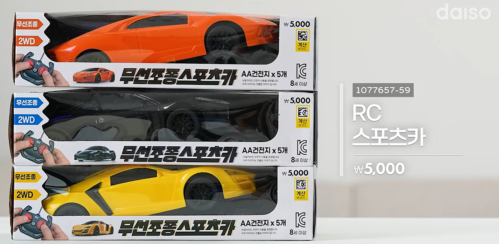
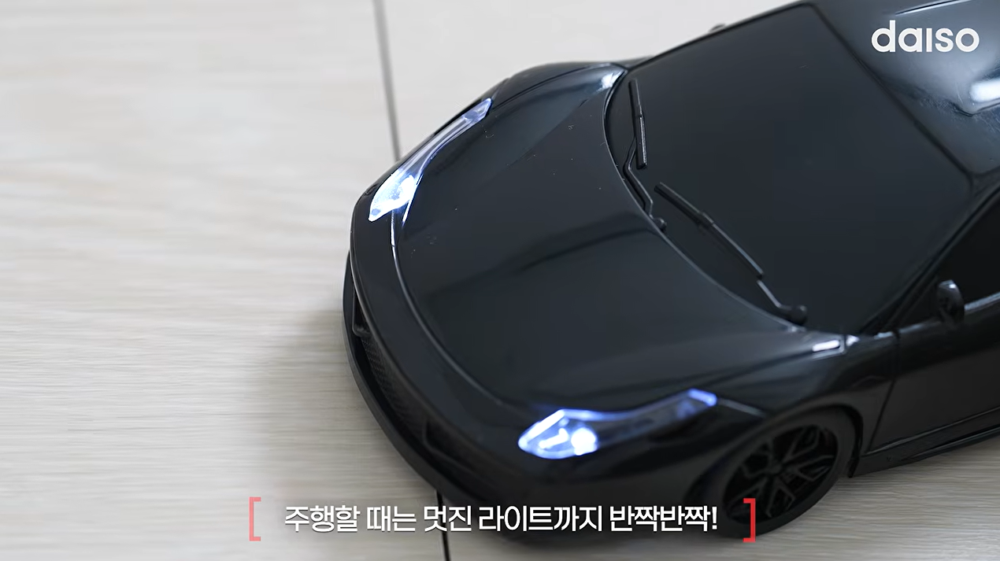
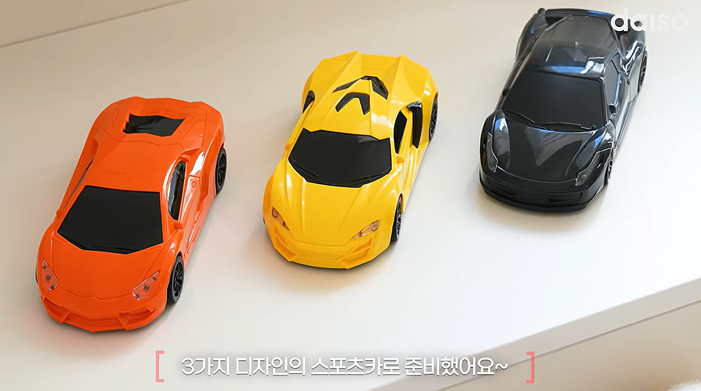
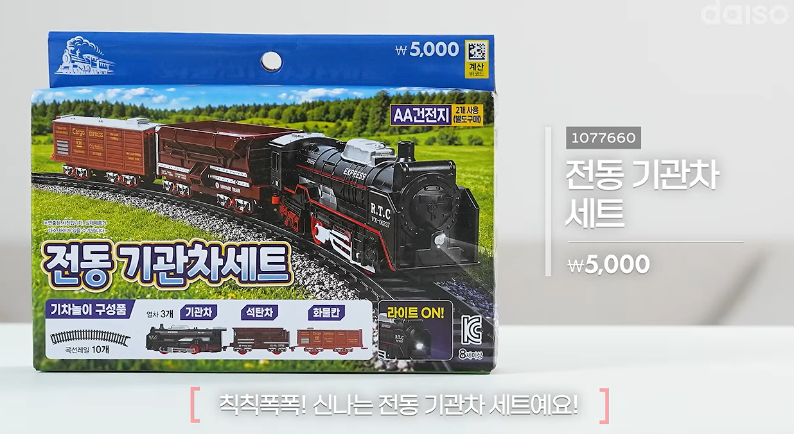
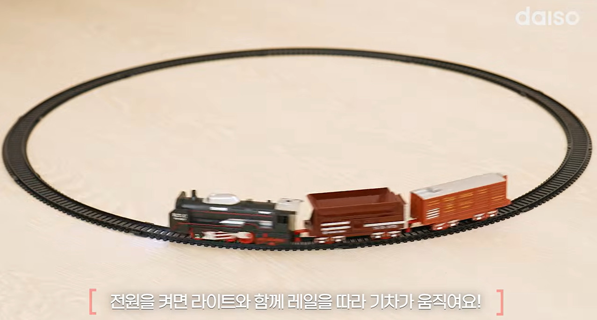

원격 조종 RC카 나옴.

라이트도 들어옴.

디자인도 그럭저럭 나쁘지 않음

???? 기차 장난감도 나옴

창의력을 발휘하면 제대로 즐길 수 있음(아마도 추가 레일도 싸게 나오지 않을까)
저게 5000원이라니 진짜 다이소가 큰일하네...

원격 조종 RC카 나옴.

라이트도 들어옴.

디자인도 그럭저럭 나쁘지 않음

???? 기차 장난감도 나옴

창의력을 발휘하면 제대로 즐길 수 있음(아마도 추가 레일도 싸게 나오지 않을까)
저게 5000원이라니 진짜 다이소가 큰일하네...
팩토리오!?
이제 다이소에서 집이랑 차만 나오면 완성이다
지금도 살수있어 니가 좀 작아지면 가능해
그런 영화 있었는데 맷데이먼 나온
다운사이징
무선조종땡기네
저게 오천원이라고?
기차는 크리스마스트리 밑에 깔아놓으면 딱이겠네
다이소 주택 언제나옴
그건 나와도 1년 지나면 박살날거 같긴 하다..
다이소 주택 청약복권 이런고 나오는거 아니냐
다이소 철도공사 개통비 5천원, 부지 확보비 별도ㅋㅋ
어릴때 rc카 갖는게 소원이었는데 그당시 돈으로도 십몇만원씩했는데 5천원에 나오네ㅋㅋㅋㅋㅋ
전동기관차 4개만 사면 원하는대로 가 되겠는걸 ㅋㅋ
기차는 특성상 기찻길 3D프린터로 뽑아서 구축가능하겠네 ㅋㅋㅋㅋㅋㅋㅋㅋ
저가격이면 중국산이겠지?
중국산도 저 가격에는 안팔더라 대신 물넣으면 가습기처럼 수증기나와서 굴뚝에서 연기나는 연출은 있음..
홈플러스가면 2만 ~ 4만원하던것들이네
요번 추석때 조카 사줬는데 저거 2m만 넘어가도 조종안된다...ㅋㅋㅋ 기차는 나름 갠찬은데 한번켜보더니 안하더라...
저건 밖이 아니라 실내용이니까..
물론 실내 기준이다...ㅠ
싼건 다 이유가 잇더라
다이소 주차타워 아들 사줬는데 마감도 좆구리고 한번에 쫙 내려와야하는데 단차때매 중간에 존나 걸려서 금새 흥미 잃어버림
저 기차 포켓몬 할때 쓰는거 본거같음
담에 한국가면 저 기차세트 많이 사와야지ㅋㅋ메르카리 이런대 좀 비싸게 팔리더라고
유아들 용이야
글씨체가 왤케 북한같냐
동무, 저가의 비밀을 더이상 캐지 말라우
다이소 반도체 좀
다이소 버크셔 제발
다이소 v8 머슬카 나올때까지 숨참는다 흡
저rc카 속도 빠르게개조하던데
와 저게 5천원?
기차 사고 싶네. 팩토리에서 하던 걸 현실에서 할 수 있다니